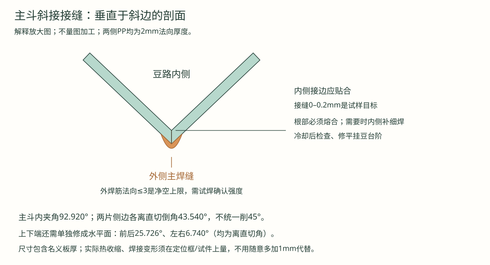
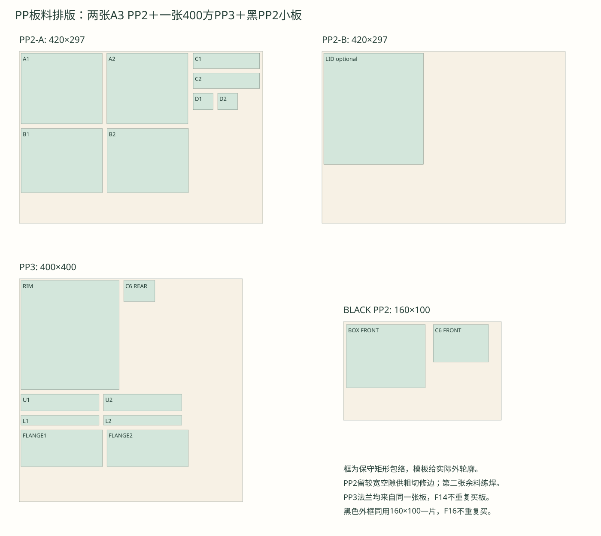
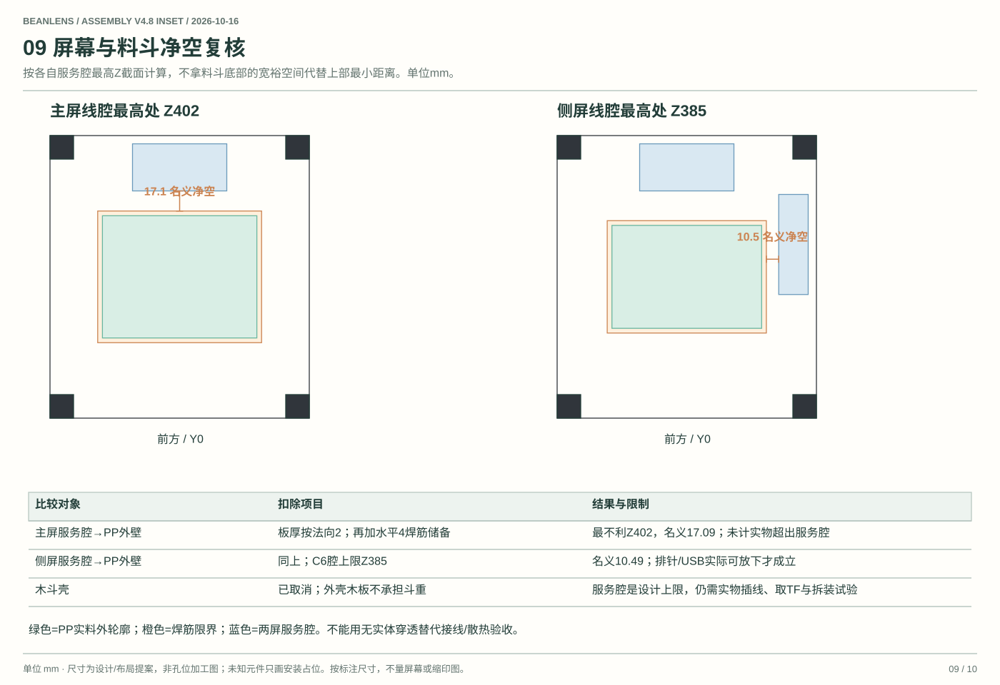
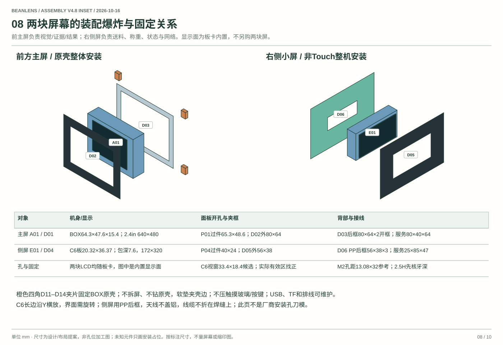

V4.8 PP实料斜接、可拆接头与双屏净空
2026-10-16。V4.8替代V4.7制作模板；本版是含板厚的首样设计，不是已实物验证的生产加工图。用户已有可控温热风焊枪。本文不要求拆开BOX或拆卸C6屏幕。
十页交互组装图 · 当前94项BOM · 实料裁切CSV · 三维板片顶点与参数。
1. 先纠正上一版的三个问题
- 屏幕画了占位，却没有分开机身、显示面、夹框、插头/排线空间；35mm/25mm占位本身不能证明可以接线。
- 外侧木斗壳不是必需，它占空间、增重，也妨碍查看接缝。取消H01–H06六个木件，改由顶框四只金属托片承托PP顶部法兰；外壳三面海洋板仍保留，黑2020仍外露。
- V4.7梯形是内面控制线。直接把它当2mm成品裁片会少算厚度与斜接。本版列出外面实料尺寸、内面、端部斜切、侧边斜接和额外焊筋限界；不再用“统一外加1mm”代替几何计算。
2. 两块屏幕放在哪里，剩多少空间
| 对象 | 原厂尺寸/配置 | 设计安装 | 接线腔与到料斗净空 |
|---|---|---|---|
| 前主屏 | K230D BOX原壳64.3×47.6×15.4，不含突出物；内置2.4英寸640×480屏 | 原壳整体朝前，机身X77.85/Y1/Z346.2；P01过件孔65.3×48.6，原点X77.35/Z345.7 | 后方80宽×40深×64高，从Y7到47、Z338到402；最小名义净空17.09 |
| 右侧屏 | ESP32-C6-LCD-1.47非Touch：板20.32×36.37、图示包深7.6；LCD有效区17.39×32.35，172×320 | 整机朝右、长边沿Y；板X211.4/Y70/Z350；P04过件孔40×24，原点Y68.185/Z348.16 | 服务腔X188–213、Y50–135、Z338–385，25×85×47；最小名义净空10.49 |
上述距离已经从PP外壁再扣除水平4mm焊筋限界，按各腔最高Z处计算；不是拿窄小的斗底代替上部净空。板厚/位置误差、超大USB插头、焊筋超限会继续减少距离，所以还必须实物接线试装。线腔不是零件，不应购买或塞入实体盒子。
主屏外压框80×64×2，视窗61×44为首样候选（木板过件孔仍65.3×48.6），背部开框80×64×2，D11–D14四角软垫夹在原壳边缘，不压玻璃/按键、不钻原壳。保留USB供电/调试、TF、PH2.0和双摄排线可达。BOX不另买LCD。
侧屏外框56×38×2；LCD视窗33.4×18.4为找正起点。后托框用PP3，56×38开26×10，避免铝板盖天线；外框只作遮边，不压LCD承重。4个M2安装位置参考孔距13.08×32，厂家图示2.5H。3mm框＋3mm隔柱配M2×8仅是候选，扣垫片后实际进入不超过约2mm且不顶底。孔的原点、屏幕有效区和无线净空仍按实物复核；不能把孔距假定成关于板外廓完全对称。
3. PP板厚到底怎样计入
主斗内表面上136方、下110×30、垂直高110。PP厚2指垂直于斜面的厚度，不能简单给口径每边加2。设kx=13/110、ky=53/110，则水平外偏移为δx=2√(1+kx²)=2.013919，δy=2√(1+ky²)=2.220044。
因此主斗实料外上口为140.027837×140.440088，外下口114.027837×34.440088。外形不是140方。以下是修配后的外表面名义轮廓，单位mm；不要把粗切余量加到最终接缝里。
| 片型 | 数量 | 外面上边 | 外面下边 | 外面斜高 | 两斜边离直切的倒角 | 上下端离直切的角度 |
|---|---|---|---|---|---|---|
| A 主斗前后 | 2 | 140.027837 | 114.027837 | 122.102416 | 43.539939° | 25.725613° |
| B 主斗左右 | 2 | 140.440088 | 34.440088 | 110.765518 | 43.539939° | 6.740056° |
| C 小斗前后 | 2 | 114.588898 | 86.588898 | 26.476593 | 40.205062° | 19.872176° |
| D 小斗左右 | 2 | 34.253268 | 16.253268 | 28.565889 | 40.205062° | 29.346828° |
“离直切”以刀片垂直板面为0°；侧边角度在垂直于该斜边的剖面上量，两块板作对称斜接。上下端修成整斗装配后的水平面。不是先把四片切成内面梯形，再把边统一削45°。
模板黑线是外表面轮廓，蓝虚线仅表示内面向外面的法向投影，不能照蓝线裁切。八个独立闭合STL把内外面、斜接面和水平端面都保留下来，单位mm，可交给加工店读模型；它不含焊筋和收缩补偿：
角度和数值保留较多小数是为了可复算，不代表手工需要达到微米精度。首样可按外轮廓粗切留1–2mm，再用夹具刮修/锉修；接边间隙目标0–0.2mm，须练习验证。若手工无法稳定修出斜接，优先让加工店按模型修边，热焊由自己完成，不把不贴合的缝全靠焊条填满。
4. 焊在外侧吗？具体怎样焊

主要焊缝放在外侧，避免在豆路留下大焊筋；但仅在外面堆一条焊条不等于根部熔合。2mm薄板先做与正式斗相同斜接的废料试片，检查内侧是否有开缝、熔合不足和明显凹坑；需要时从内侧补细封口，再修成光顺过渡。不要把内侧焊肉全部削薄。
- 选可核食品接触用途的PP-H板和相容焊条。先测板厚，明显偏离2mm时重算，不沿用本版角度/间隙。用干净刮刀去污层/氧化表层，干燥。
- 先纸样，再做两相邻板的斜接试片。上下定位框按内口136方和110×30，垂直间距110；让内侧接边相合，外侧斜口贴合，不让焊条充当结构填缝胶。
- 用匹配的小喷嘴，同时使母材边缘与焊条软化。温度、风量、距离、速度按板材/焊条与枪嘴调试；可控温不等于一定有合适的小风量，不能堵风嘴强行减风。
- 试片自然冷却，再弯折/剥离，检查是否沿根部整条脱开。失败先重新调热输入与接边，不直接焊正式斗。
- 正式斗先点四角，确认口径与两条对角线，再按对角交替焊短段。主要从外侧焊，不一口气烧完一条长缝。母材冒烟、起泡或塌边时立即停下冷却。
- 外焊筋以法向不超过3mm作为本版净空限界，水平按4mm预留；这不是保证强度的焊缝规格。实际更大须修整或重新核屏幕、托片和接头间距，不能硬挤进去。
- 冷却后量内口、外口、高度、平整度，检查内侧熔合并修平挂豆处；清水检漏后彻底干燥，再分级装豆。检漏通过不等于承载强度合格。
Röchling工业热气焊参数有测量位置、焊法、风量和焊条直径条件；SIMONA还要求材料焊接相容，不能只看颜色。之前约300–340°C仅是工业参考范围，不能当2mm小斗与任意热风枪的设定配方。原厂资料见文末。
5. 取消木斗以后怎样承重
顶部PP3法兰176×196、开136方孔，底Z440、顶443。四只金属托片装在顶框左右内槽，水平脚面Z440；竖脚在Z440–460锁M5。角铝25×25×2切20宽、竖外脚修22、水平外脚修14，位置X20/186、Y75/145，右侧反向。水平脚避开PP外壁/焊筋。四个支点处，PP法兰底边局部修2×2倒角（沿边长20），避让角铝根部约R2；只是底面倒角，不切穿3mm法兰。实际根部R更大时先做样件重定倒角/托片，不能强压法兰。
法兰4个M3孔中心全局X28.5/191.5、Y85/155，PP开3.5×7径向槽，金属脚圆孔3.5；宽垫片覆盖槽，先轻夹，不把PP顶出波浪。实际角铝根部圆角/孔位需实配，不能把图示尺寸当现货角码型号。提取料斗前先拆下方可拆接头，不拽相机排线或两屏线束。
PP可能随时间和温度蠕变，顶法兰支承尚未做1kg静载验收。先空斗，再逐级加到目标载荷，复量法兰挠曲/口形；发现持续变形，改加外侧窄金属承托环，不重新套回厚木斗挤屏幕空间。主斗理想容积仍约1.15L，不保证一次装1kg生豆。
6. 可拆接头和小斗高度重新分配
主斗下口焊在上法兰顶面孔周，小斗上口焊在下法兰底面孔周；外侧焊筋不占密封面。两焊接半组件完全冷却后研配平面，再放密封圈、加限压垫，4个螺栓对角轻锁。不能隔着硅胶焊接，不能对装好闸片的总成加热。
| 层次（由下到上） | Z范围 | 尺寸/作用 |
|---|---|---|
| 下五窗PP3两片 | 280–286 | 140×18，五窗 |
| POM4支承 | 286–290 | 140×30，五窗；不与PP焊 |
| 闸片缝 | 290–292.3 | 2mm铝片＋0.3名义余量 |
| 上五窗PP3两片 | 292.3–298.3 | 140×30，五窗 |
| 小过渡斗 | 298.3–323.2 | 高24.9，内110×30→82×12 |
| 下PP3法兰 | 323.2–326.2 | 146×66，孔110×30 |
| 硅胶密封圈 | 326.2–327 | 自由厚1，名义压0.8 |
| 上PP3法兰 | 327–330 | 146×66，孔110×30 |
| 主斗 | 330–440 | 内136方→110×30，高110 |
法兰扩大到146×66，是为了让螺栓和垫圈避开外侧焊筋。4孔中心全局X43/177、Y93/147；孔Ø3.4候选、M3×16、外径约7的垫圈。0.8限压垫可用0.5＋0.3，不凭拧紧手感把PP压弯；实际密封不够时换合适垫片/密封材料并调整叠高。20%的名义压缩只是首样目标，不是已验证的密封参数。
18.3（五窗/闸缝）＋24.9（小斗）＋6（双法兰）＋0.8（密封）＝50，总高度保持Z280–330。主斗顶支点与下方模块不能强行拉到位，先调支承/薄垫消除装配应力。
7. 五槽、后退片防护和遗漏
五窗均14×12，筋3，横向82；局部X29/46/63/80/97。上板/POM孔Y9，下板孔Y3，装后均落在全局Y114–126。闸片110×45×2行程15，两侧隔距在扫掠区外。先手推、单槽，再五槽。
本版补画G09加强角铝、G10居中耳，避免合并成一块转接板后漏买/漏装。G20后罩仍明确标成未冻结接口：前端窄缝、侧封、润滑隔离和清理路径必须按滑架全行程做纸样。图中的罩顶占位不等于已封闭退片袋；完成前不做带豆电动测试。
第10页遗漏核查列出称重组件外形、相机近焦/视锥、电源模块实际尺寸、线束弯曲半径和散热等待核事项。图纸无穿透不能替代这些实物检查。

8. 板料与现有型材
- 外壳海洋板6mm，仅9片；600×600一张足够。已有800板继续用，旧6片木斗件取消。
- PP-H2：A3两张含主斗、小斗、黑色外框可另选同厚黑PP、防尘盖/练习。焊材不足时补同批小板，不拿不明回料凑。
- PP-H3：400×400一张，含顶法兰、4块五窗、2块接头法兰和侧屏绝缘后框；F14不重复买同材板。
- 黑PP2：160×100一片，共裁两屏外框，F15/F16不重复买。
- 板料包络排版与坐标CSV可对照材料用量；实际梯形和开孔看模板。
- POM4：140×30一片；硅胶板1mm至少160×80一片，资料可核；开口/尺寸见模板。
- 型材数量不变：460×4、200×6、180×8。已有460×7/400×2仍只补同槽型黑色180成品四根。

原厂依据与验证范围
- 正点原子BOX尺寸/显示/接口：原壳不含突出物，不把64.3×47.6当玻璃开窗尺寸。
- Waveshare非Touch板文档与原厂尺寸图：PCB、LCD有效区、M2参考孔距；未用Touch版替代。
- Röchling热气焊条件、SIMONA焊接相容与工艺。

本版验证对象是几何、厚度/斜接实体、BOM映射、浏览器交互和PDF打印；未实物焊接、承重、带豆开合、验散热或称重精度。原厂外形、工程候选和实物待核项在图中分别注明。
板料排版

双屏净空切面

完整装配中的双屏
